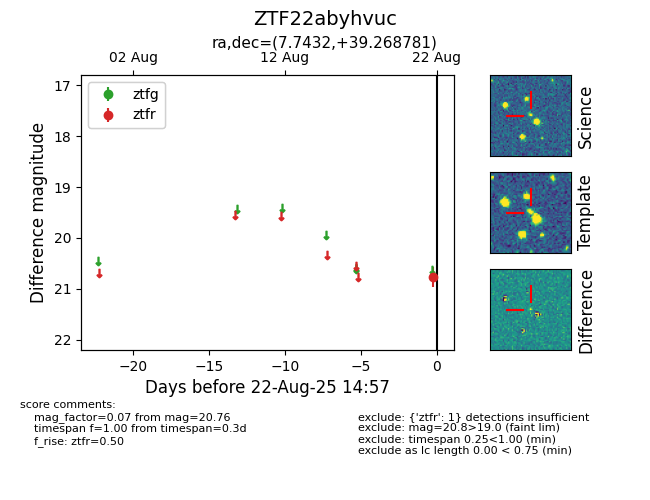

Target ZTF22abyhvuc at 2025-08-22 14:57, see:
FINK: fink-portal.org/ZTF22abyhvuc
Lasair: lasair-ztf.lsst.ac.uk/objects/ZTF22abyhvuc
ALeRCE: alerce.online/object/ZTF22abyhvuc
alt names
ZTF22abyhvuc (ztf,alerce)
coordinates:
equatorial (ra, dec) = (7.7432,+39.26878)
galactic (l, b) = (118.6167,-23.43143)
photometry
last ztfr=20.76
1 ztfr detections
